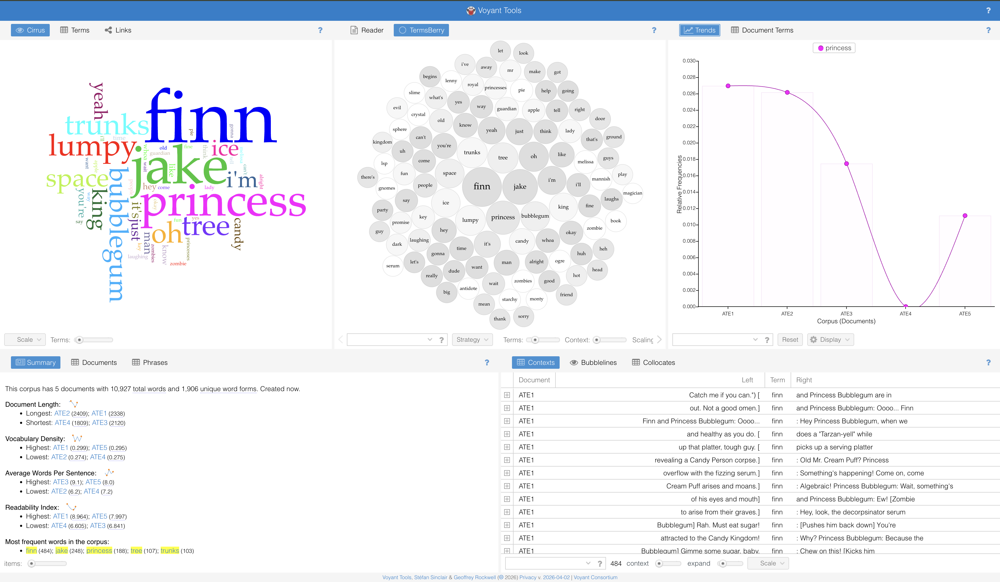
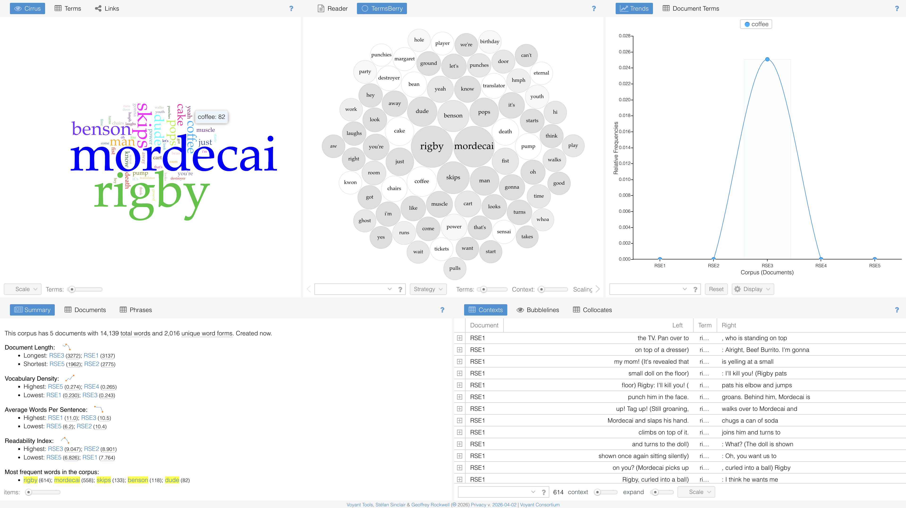
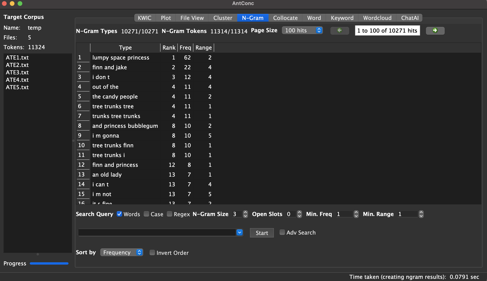
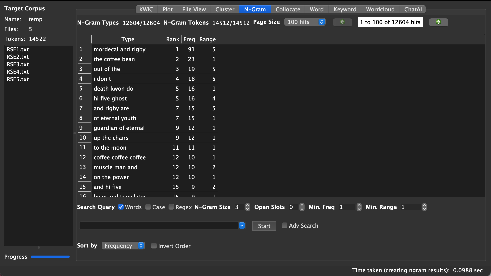

For this project in DIGIT 100, I developed two websites side by side. One I constructed using Github and the other using Penn State’s Wordpress. Both were very different experiences that had their unique challenges. Github, although being slightly more complex, was much easier to customize and work with. Wordpress values being “user friendly” over actual control and design.
I have been working with github for over a semester and a half now. I understand the differences between the different types of documents that are needed. I am very used to the natural work flow of the site. Github feels community based. It is more encouraging when I can see my friends and other project groups working alongside me. I understand git and git bash very well and I am having so much fun with CSS styling. Which is something I am very interested in learning more about. Right now I am working on an alternative home page for my Github website. I am hoping to complete it after this assignment is due. This allows for complete control over design aspects and lets me have more creative freedom. Plus, git forces me to have better file management and keep my documents in order and reasonable. When I run into issues, there is often a clear solution.
Using WordPress felt like taking a step backwards. I understand why it would be helpful to learn git and WordPress at the same time would be useful, however it was frustrating. I could not get the links at the bottom of the page to go away. There were way less formatting options. The entire formatting of the site felt outdated and archaic, using icons that have long been phased out. I also had a really difficult time formatting my images for my gallery. It just felt very sterile, in comparison to Github, where I can easily comment on others' code. I can definitely see the value though, if you are not well versed in Git, which definitely can take a second to learn.
After working on both of these sites, I have concluded that I will be sticking with Github. It feels like a better place to work through. As much as there is to debug and figure out, I will not sacrifice my creative control.
View my alternate site here: https://sites.psu.edu/trtaylorportfolio/


When I looked at the n-gram results in AntConc, I noticed that both shows repeat character names a lot, like “Finn and Jake” and “Mordecai and Rigby,” which makes sense since they’re both really dialogue-heavy. But the way those phrases work is actually pretty different. In Adventure Time, a lot of the repeated phrases are more specific and tied to the fantasy world, like “Lumpy Space Princess” or “the candy people,” which feel very unique to that universe. In Regular Show, the phrases are a lot more simple and casual, like “the coffee bean,” and feel more like normal conversations. So even though both shows are kind of chaotic and funny, the language in Adventure Time is way more imaginative, while Regular Show feels more grounded and realistic.

